Distinguished academic leaders, patrons, international advisory board, and technical program chairs governing AIHASC 2027.
Visionary leadership guiding academic excellence and conference governance in Pune, Maharashtra.
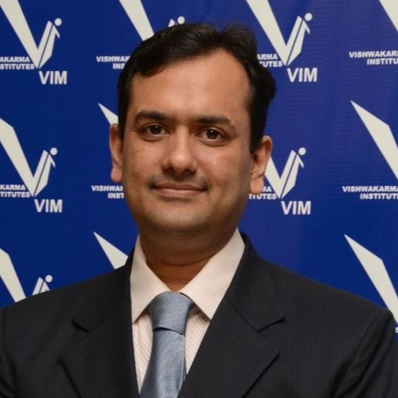
BRACT's Vishwakarma Institute of Technology, Pune
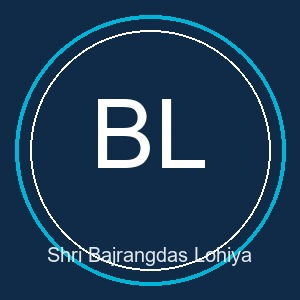
BRACT's Vishwakarma Institute of Technology, Pune
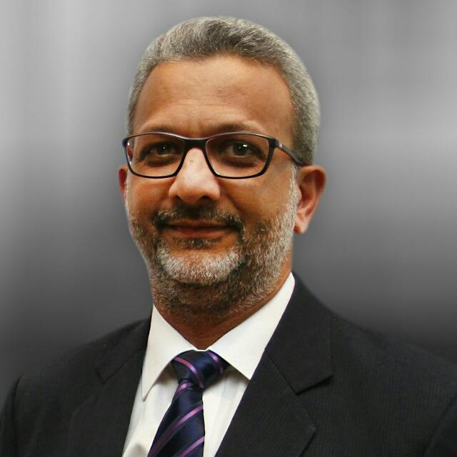
Vishwakarma Institutes & University
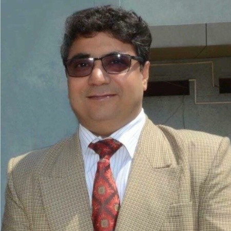
BRACT's Vishwakarma Institute of Technology, Pune
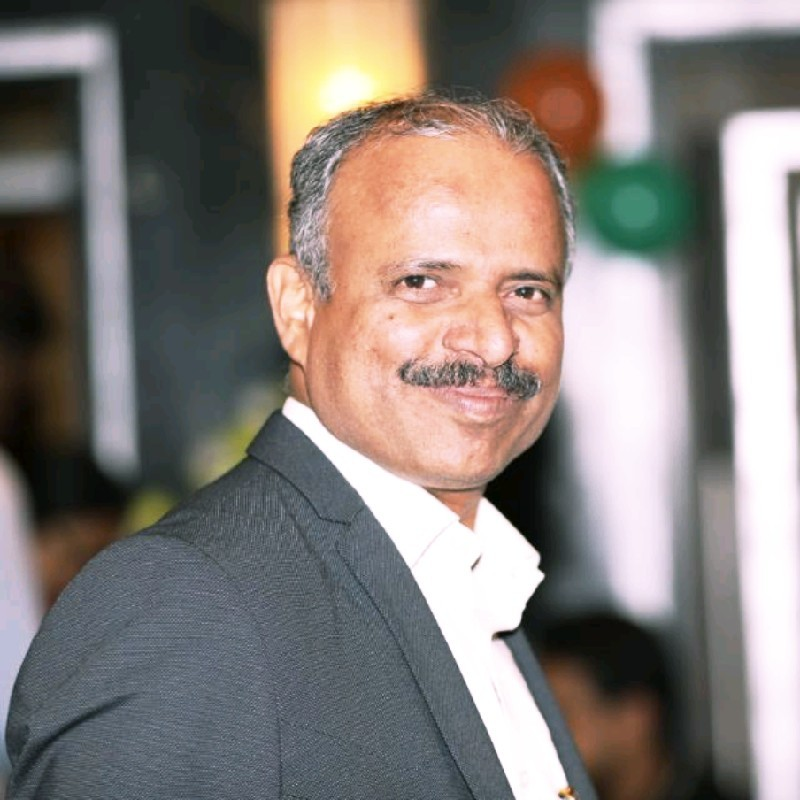
BRACT's Vishwakarma Institute of Technology (Kondhwa Campus), Pune
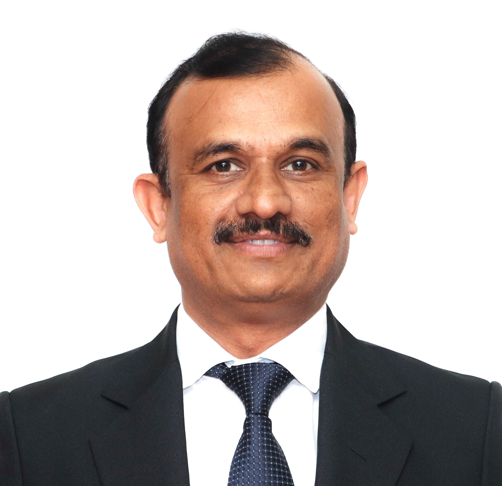
Professor, BRACT's Vishwakarma Institute of Technology (Kondhwa Campus), Pune
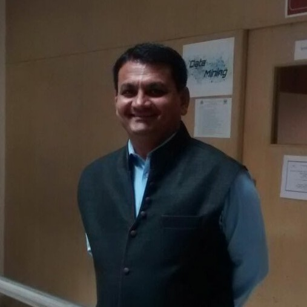
Dean Academics, BRACT's Vishwakarma Institute of Technology (Kondhwa Campus), Pune
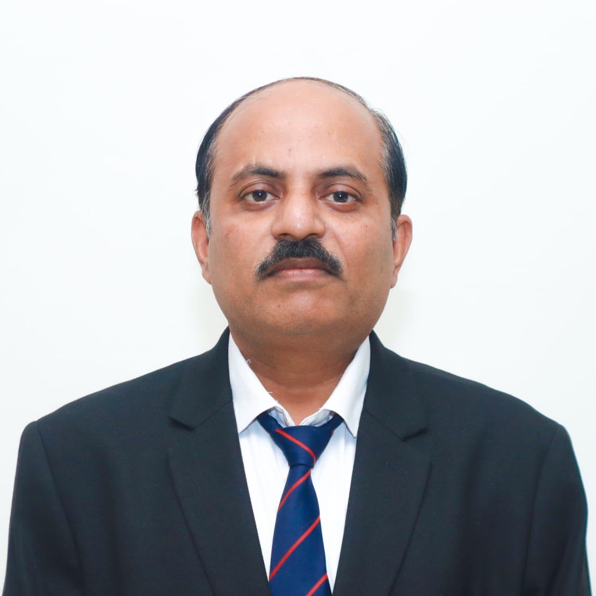
Associate Professor, BRACT's Vishwakarma Institute of Technology (Kondhwa Campus), Pune
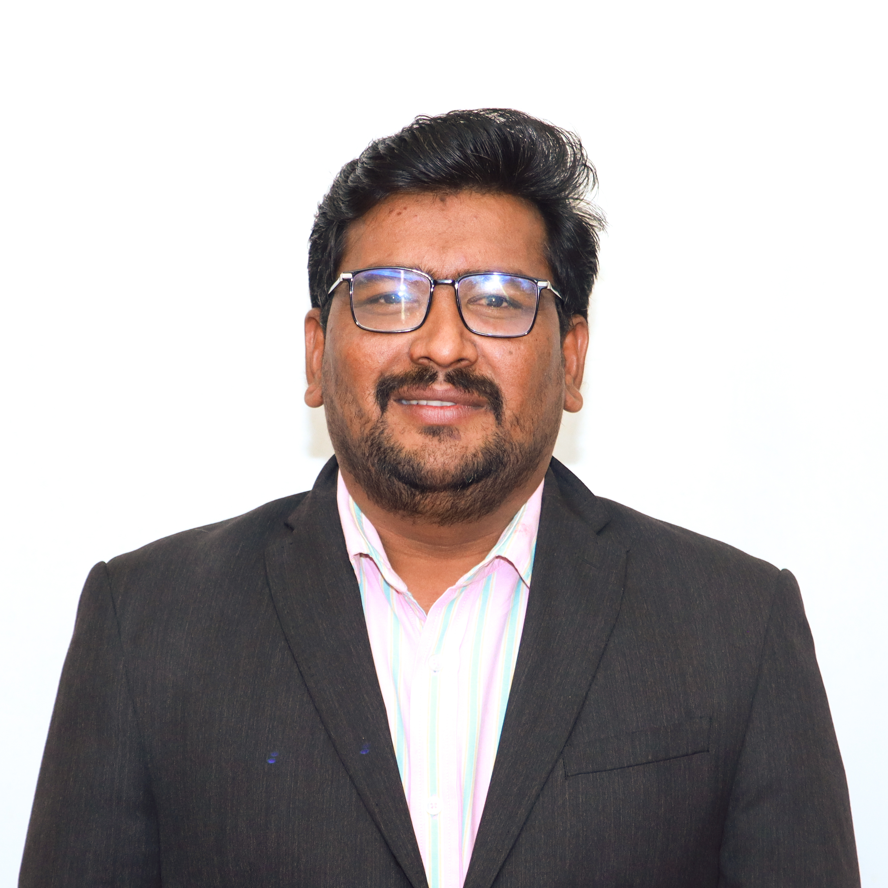
Associate Professor, BRACT's Vishwakarma Institute of Technology (Kondhwa Campus), Pune
Renowned international experts delivering keynote addresses at the conference.
Professor, "Dunărea de Jos" University of Galați, Romania
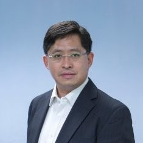
Associate Professor, Hong Kong Metropolitan University, Hong Kong
Director, TSMC-NCKU Joint Research Center, Taiwan
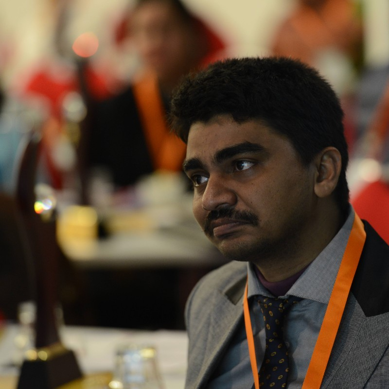
Professor, Techno International New Town, Kolkata, India
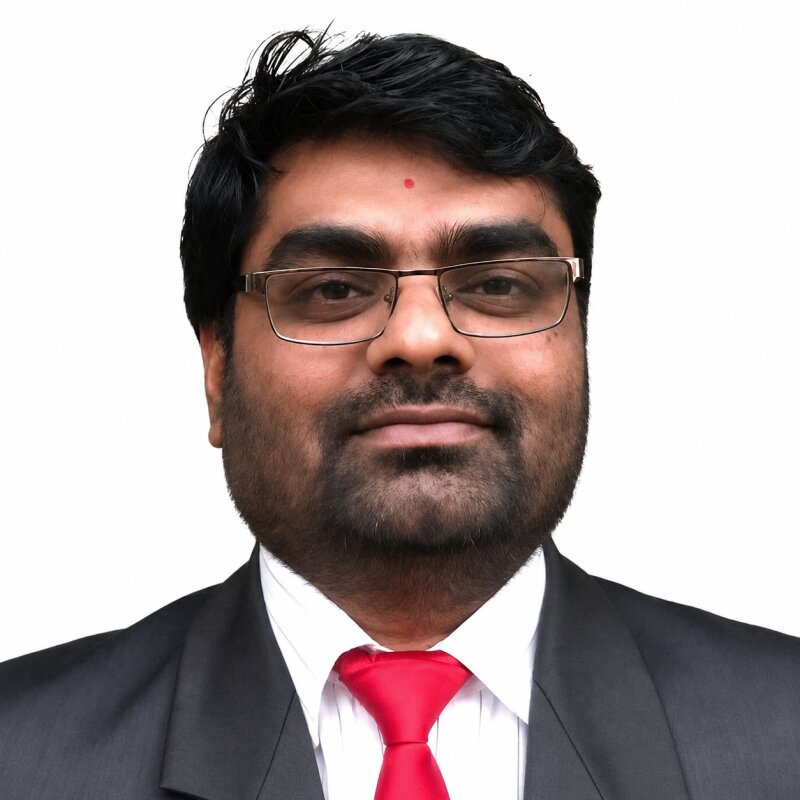
Senior Data Scientist, X-idian, City of Johannesburg, Gauteng, South Africa
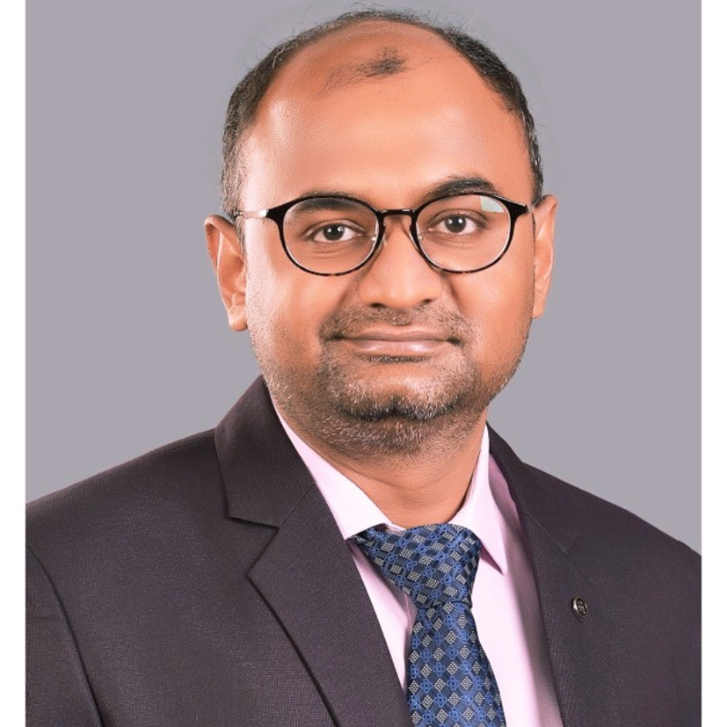
Associate Professor & Head, Dept. of Computer Science, BITS Pilani, Dubai Campus, UAE
Deans, Heads of Department, and senior faculty providing institutional oversight:
International participation across multiple countries, providing global academic guidance and standards.
Academic experts and senior researchers evaluating double-blind paper submissions across all tracks:
Overseeing proceedings compilation, formatting standards, and ethics compliance:
Dedicated faculty teams coordinating event operations, outreach, and media:
Execution teams ensuring hospitality, student engagement, finance, and publicity:
Qualified doctoral holders and senior industry researchers in AI, healthcare informatics, and sustainable systems are invited to serve on the AIHASC 2027 Reviewer Board.